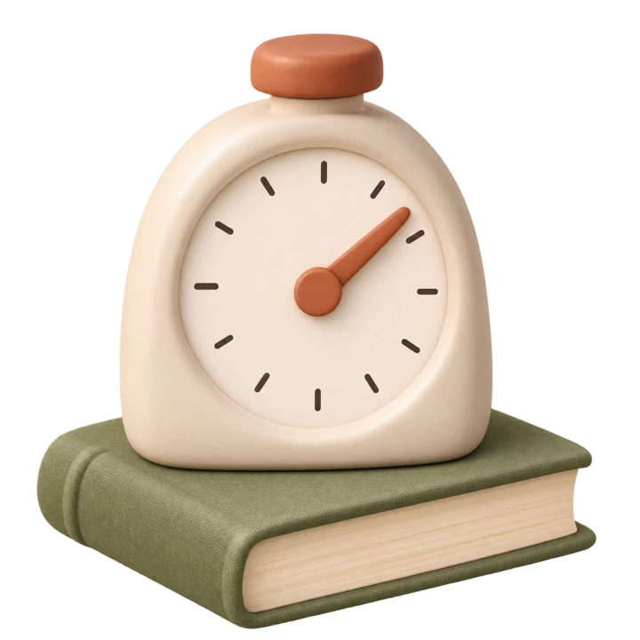
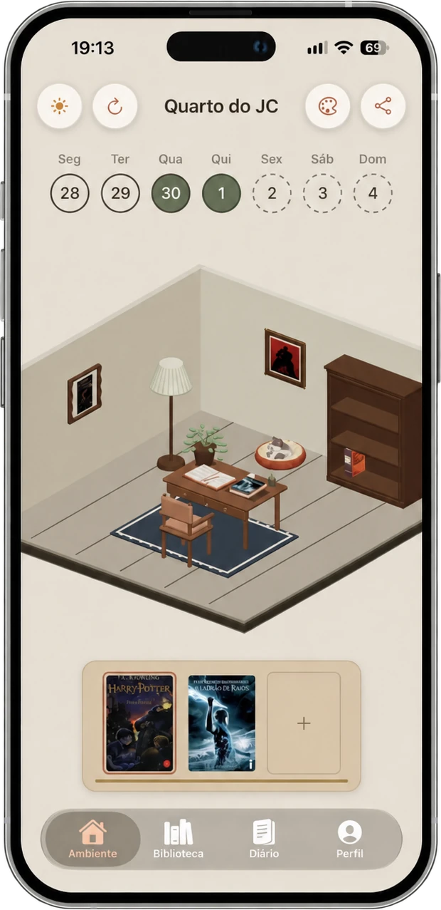
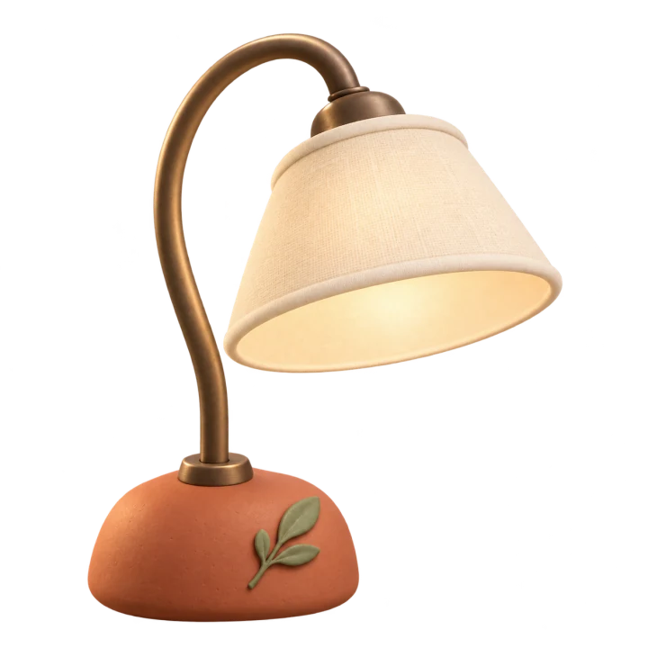
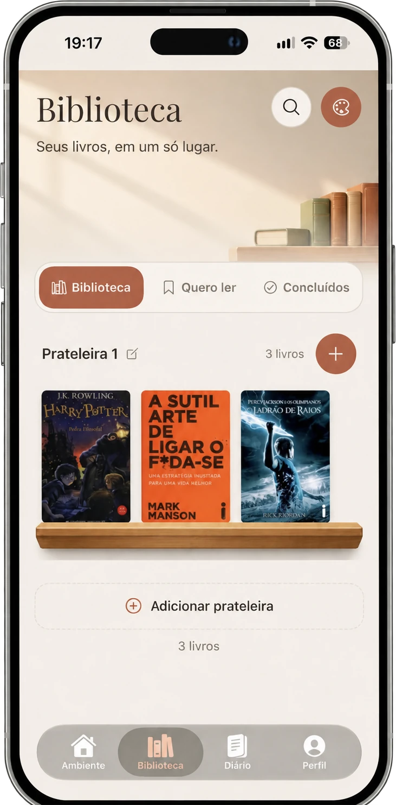
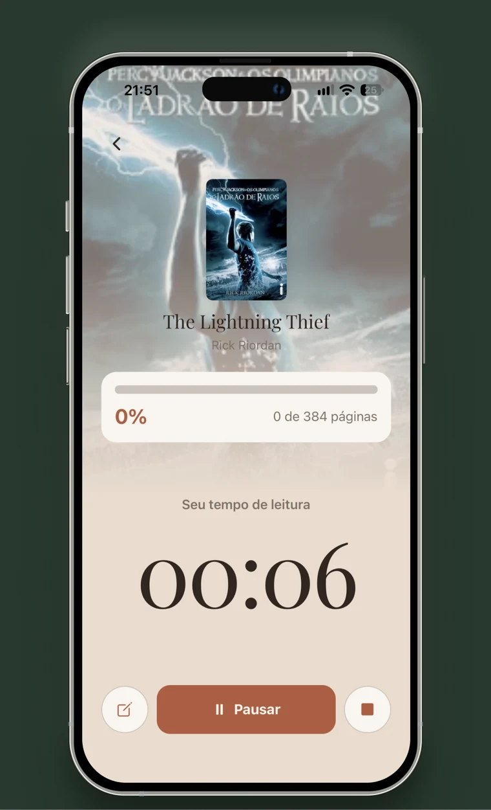
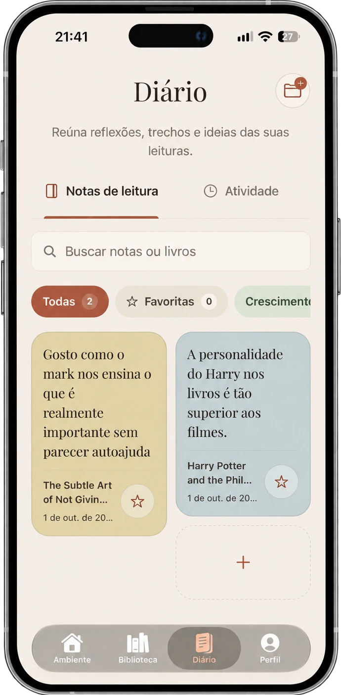

Ritmo de leituraSeus livros.
Seu ritmo.
Nookly: Sua biblioteca pessoal organiza seus livros, acompanha seu progresso e guarda as ideias que aparecem pelo caminho — tudo no seu cantinho de leitura.
Baixar naApp Store
Em breve noGoogle Play
Para iPhone. O app é gratuito; algumas coleções podem ser compradas à parte.
Reserve seu nome de usuário para os próximos recursos sociais
Um lugar para tudo
que a leitura deixa.
O próximo livro. A página onde você parou. Aquela ideia que vale guardar. No Nookly, tudo encontra seu lugar.

Sala virtual
Uma estante.
Mil próximas histórias.
Reúna os livros que quer ler, os que estão te acompanhando e os que já deixaram saudade. Crie suas estantes e encontre sua próxima leitura.
- Busca de livros e cadastro manual
- Quero ler, lendo e concluídos
- Estantes organizadas do seu jeito
Só mais
um capítulo.
Reserve um momento para ler. Registre suas páginas, acompanhe seu progresso e use o cronômetro para dar espaço à leitura no seu dia.
Pequenos momentos também fazem uma boa história.


A última página
não precisa ser
o fim da conversa.
Guarde pensamentos, trechos e descobertas no seu diário. Organize suas notas por livro e favorite o que você quer revisitar.
Para lembrar do que ficou em você.
Seu cantinho de leitura.
Agora, dentro do app.
Escolha móveis, mude a decoração, acrescente suas fotos e encontre a atmosfera que combina com você. Uma sala virtual para chamar de sua.
Dia ou noite
Um ambiente para cada momento da sua leitura.
Do seu jeito
Combine objetos e organize cada detalhe do espaço.
Com suas memórias
Suas fotos também têm lugar nesse refúgio.
Antes de abrir
a primeira página.
O Nookly é um app para ler ebooks?
O Nookly organiza sua biblioteca e acompanha suas leituras. Ele não fornece ebooks nem substitui o livro físico ou o aplicativo em que você lê.
Preciso criar uma conta?
Você pode usar o app sem conta, com os dados no aparelho. Para sincronizar sua biblioteca e seu perfil, entre com Google ou, no iOS, com Apple. O login com Google usa seu identificador, email e perfil básico para autenticar sua conta. Consulte os detalhes de armazenamento, análise de uso e exclusão na Política de Privacidade.
O Nookly está disponível para quais aparelhos?
O Nookly está disponível para iPhone na App Store. A versão para Android chega em breve à Google Play.
O Nookly tem compras dentro do app?
O app pode ser baixado gratuitamente. Algumas coleções opcionais da sala virtual são compras dentro do app; a App Store apresenta os preços antes da confirmação. Não há assinatura.
Tem um cantinho
esperando por você.
Leve seus livros, seu progresso e suas ideias para a sala de leitura do Nookly.
Baixar naApp Store
Em breve noGoogle Play
Para iPhone. Preços de compras opcionais são exibidos pela App Store.